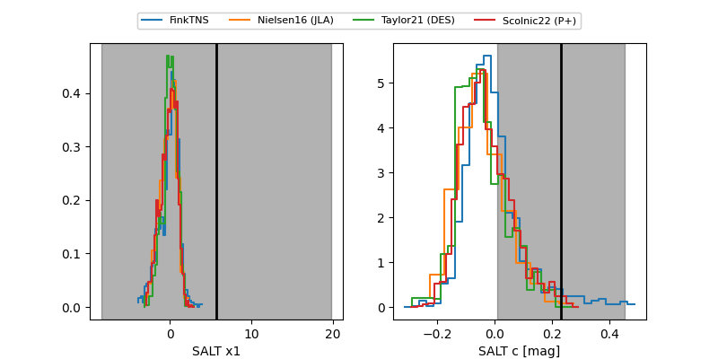

FINK: ZTF25abppxme
Lasair: ZTF25abppxme
ALeRCE: ZTF25abppxme
TNS: 2025xib
YSE: 2025xib
ZTF25abppxme (ztf,fink)
2025xib (tns,yse)
equatorial (ra, dec) = (335.2318,+3.19292)
galactic (l, b) = (66.8660,-42.71676)

last atlaso=19.42, ztfg=19.66, ztfr=19.23
1 atlaso, 1 ztfg, 3 ztfr detections